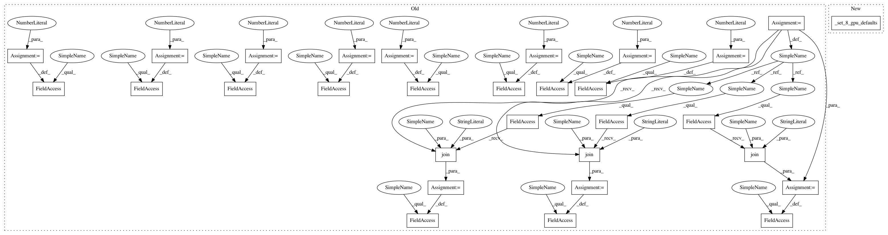

eb5916741305236fe322e180281cc8d330ea7cc5,official/benchmark/ncf_keras_benchmark.py,NCFKerasAccuracy,benchmark_8_gpu_tf_data_ctl_fp16_mlperf_like,#NCFKerasAccuracy#,375
Before Change
8 GPU FP16 using CTL
self._setup()
FLAGS.keras_use_ctl = True
FLAGS.num_gpus = 8
FLAGS.train_epochs = 17
FLAGS.batch_size = 1048576
FLAGS.eval_batch_size = 1048000
FLAGS.learning_rate = 0.0045
FLAGS.beta1 = 0.25
FLAGS.beta2 = 0.5
FLAGS.epsilon = 1e-8
FLAGS.dtype = "fp16"
FLAGS.loss_scale = 8192
FLAGS.train_dataset_path = os.path.join(NCF_TF_DATA_1M_BATCH_DIR_NAME, "training_cycle_*/*")
FLAGS.eval_dataset_path = os.path.join(NCF_TF_DATA_1M_BATCH_DIR_NAME, "eval_data/*")
FLAGS.input_meta_data_path = os.path.join(NCF_TF_DATA_1M_BATCH_DIR_NAME, "meta_data.json")
self._run_and_report_benchmark_mlperf_like()
def benchmark_8_gpu_tf_data_ctl_fp16_graph_rewrite_mlperf_like(self):
8 GPU FP16 graph rewrite using CTL.
After Change
def benchmark_8_gpu_tf_data_ctl_fp16_mlperf_like(self):
8 GPU FP16 using CTL.
self._setup()
self._set_8_gpu_defaults()
FLAGS.keras_use_ctl = True
FLAGS.dtype = "fp16"
FLAGS.loss_scale = 8192
self._run_and_report_benchmark_mlperf_like()
In pattern: SUPERPATTERN
Frequency: 4
Non-data size: 30
Instances
Project Name: tensorflow/models
Commit Name: eb5916741305236fe322e180281cc8d330ea7cc5
Time: 2020-04-24
Author: gardener@tensorflow.org
File Name: official/benchmark/ncf_keras_benchmark.py
Class Name: NCFKerasAccuracy
Method Name: benchmark_8_gpu_tf_data_ctl_fp16_mlperf_like
Project Name: tensorflow/models
Commit Name: eb5916741305236fe322e180281cc8d330ea7cc5
Time: 2020-04-24
Author: gardener@tensorflow.org
File Name: official/benchmark/ncf_keras_benchmark.py
Class Name: NCFKerasAccuracy
Method Name: benchmark_8_gpu_tf_data_ctl_fp16_graph_rewrite_mlperf_like
Project Name: tensorflow/models
Commit Name: eb5916741305236fe322e180281cc8d330ea7cc5
Time: 2020-04-24
Author: gardener@tensorflow.org
File Name: official/benchmark/ncf_keras_benchmark.py
Class Name: NCFKerasAccuracy
Method Name: benchmark_8_gpu_tf_data_ctl_fp16_mlperf_like
Project Name: tensorflow/models
Commit Name: eb5916741305236fe322e180281cc8d330ea7cc5
Time: 2020-04-24
Author: gardener@tensorflow.org
File Name: official/benchmark/ncf_keras_benchmark.py
Class Name: NCFKerasAccuracy
Method Name: benchmark_8_gpu_tf_data_fp16_mlperf_like
Project Name: tensorflow/models
Commit Name: eb5916741305236fe322e180281cc8d330ea7cc5
Time: 2020-04-24
Author: gardener@tensorflow.org
File Name: official/benchmark/ncf_keras_benchmark.py
Class Name: NCFKerasAccuracy
Method Name: benchmark_8_gpu_tf_data_ctl_mlperf_like